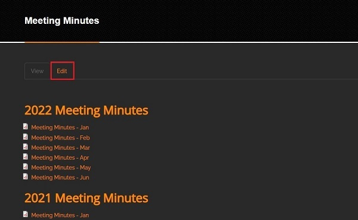
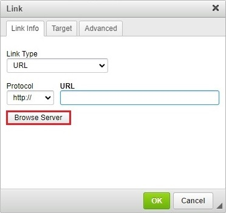
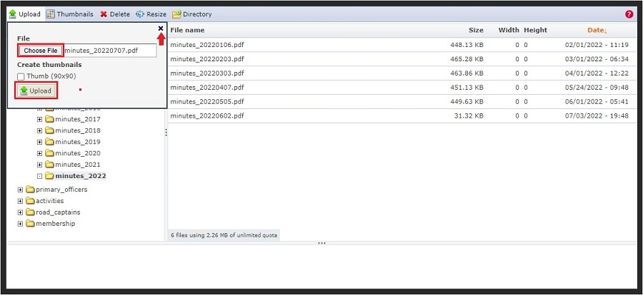
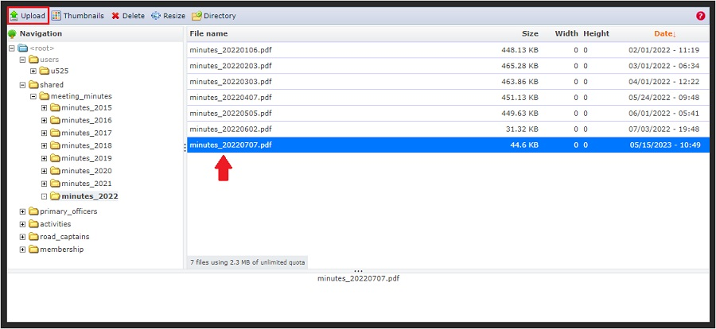
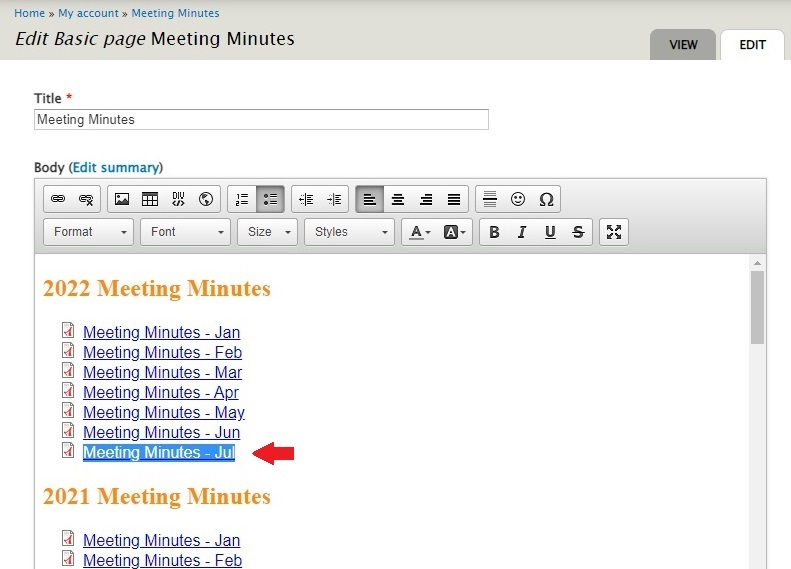
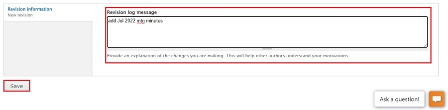
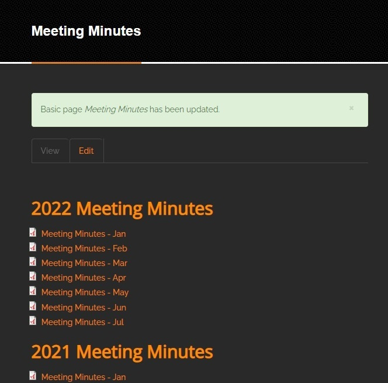

Upload Meeting Minutes
General notes, terminology and policies
- There are two environments in which you can work;
- The sandbox environment is where you can test and try things out to familiarize yourself with the steps you will be going through. The sandbox environment starts with dev. Our sandbox environment is https://dev.raleighhog.com
- The production environment is the site that all members see. This is where you make the changes that chapter members see. Our production environment is https://www.raleighhog.com
- Please note that prior to doing anything in the production environment you can test in the sandbox environment first. This environment is used for testing and is not seen by members.
- Your login credentials are the same for both environments
- Your webmaster will also help with any questions you may have.
- Please use caution when in the directories. You have the ability to delete files. This should never be done.
- Files being uploaded should include a datestamp. This is how we distinguish the latest file to be used.
- For instance,
YYYYMMDD.pdf where YYYY is the four digit year, MM is the two digit month and DD is the two digit day. This is a good filename as it allows the files to easily be ordered.
- Note that there is a directory under
root --> users. The directory name starts with a 'u'. This is a directory that only you can see. You can upload files here but they cannot be shared with others. This directory will not be addressed in this document. Additional information about it can be found by talking with your local webmaster.
- By default, this is the directory selected when you first log in. Be sure and follow the instructions below to upload into the correct, working directory.
Upload the Monthly Minutes
- Login to your account on raleighhog.com
- With your mouse, hover over the My Account link and click the Meeting Minutes link. see image below
- On the page that opens, click the Edit tab. see image below 
- The Meeting Minutes page opens in edit mode. The next three steps will add the line for the next month's minutes.
- Place your cursor at the end of the line for the last month listed in the current calendar year. Jun of 2022 is shown for this tutorial. see screenshot below
- Tap the Enter key to move to a new line. (Do NOT add a space prior to hitting the Enter key) see screenshot below
- Following the naming convention, type in the line for the next month. (Do NOT add any extra spaces at the end of the line) see image below
- The next five steps will walk through uploading the meeting minutes and linking to them
- Highlight the entire line you just added by hovering the cursor over it and clicking three times. When the line is highlighted, move the cursor and click the link icon in the Body toolbar (outlined in the image). see image below
- In the pop-up window that opens, click the Browse Server button. see image below 
- Click on the shared directory to expand it, then click on the meeting_minutes subdirectory to expand it, the click on the current year subdirectory to expand it. (2022 is expanded for this tutorial) The list of files currently in the subdirectory are listed. Click Upload from the toolbar. see image below
- Click the Choose File button and select from your machine the PDF file you want to upload. (This file will be in whichever directory you placed it.)
When the file finishes loading click the Upload button.
Click the x in the upper right to close the window. see image below 
- The PDF has been successfully uploaded to the server
- In the list of files, double click on the file you just uploaded to select it, then click the Upload icon in the toolbar. see image below 
- The URL path has been filled in. Click the OK button. see image below
- The Meeting Minutes is now a link to the PDF you just uploaded
- Scroll down to the bottom of the screen. Optionally fill in the Revision log message with a short message of what you just did. Something short like "add Jul 2022 mtg minutes" is good enough to let others know what you did.
Click the Save button to save your changes. see image below 
- Sucess! You are brought back to the Meeting Minutes home page showing the meeting minutes link you just added. 